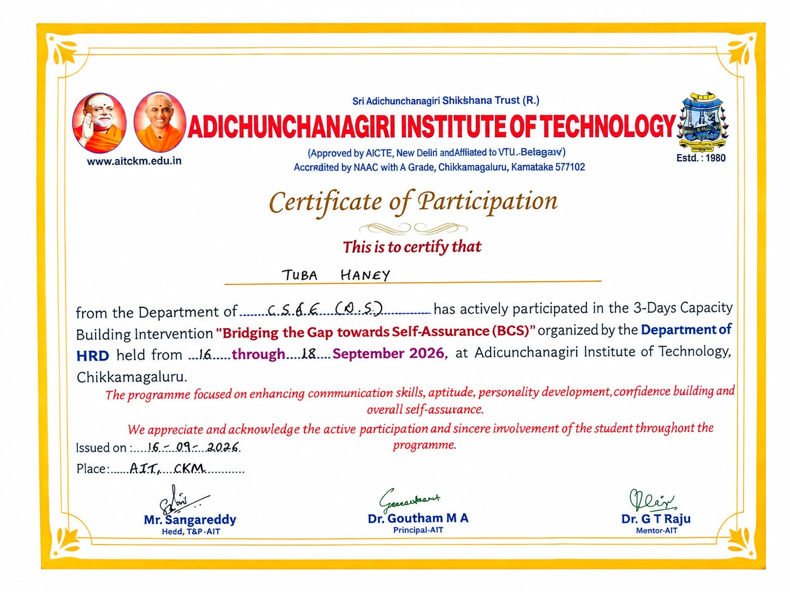

Technical skills
Programming
Building a solid foundation in languages and core programming concepts.
B.E. Data Science · Second year
B.E. Data Science Student
Learning, building and growing in Data Science and technology.
Adichunchanagiri Institute of Technology · Chikkamagaluru, Karnataka
About me
I’m a second-year B.E. Data Science student at Adichunchanagiri Institute of Technology in Chikkamagaluru, Karnataka.
I’m interested in programming, Data Science, Python, Java and emerging technologies. I enjoy learning new concepts, working on projects and continuously improving my technical skills.
I bring a positive attitude, a problem-solving mindset and a genuine willingness to learn. I value clear communication and teamwork, and I’m adaptable when exploring a new challenge.
Explore my journeyHow I work
Skills
A growing foundation in programming, data, and the tools that help turn ideas into useful work.
Technical skills
Building a solid foundation in languages and core programming concepts.
Technical skills
Interested in using data-driven thinking to explore questions and problems.
Technical skills
Learning the building blocks of web content and working with databases.
Soft skills
Working well with others and communicating ideas clearly.
Soft skills
Taking initiative and staying open to new situations and ideas.
Soft skills
Approaching challenges with curiosity and a willingness to learn.
Education
Current · 2nd Year
Adichunchanagiri Institute of Technology
Chikkamagaluru, Karnataka
Pre-university education
St. Martha’s PU College
Mudigere, Karnataka
Secondary education
Bethany Higher Primary School
Mudigere, Karnataka
My focus is on building strong technical and analytical foundations, then putting them to work through practical projects.
Projects
A mix of data, software and real-world problem solving. Each project is part of my learning journey.
A technology-based project focused on improving traffic management using smart systems and data-driven concepts.
A project focused on understanding and improving energy consumption in rural and agricultural areas using technology and data-driven approaches.
A safety-monitoring project using sensors, IoT concepts and intelligent detection to help monitor PPE and working conditions.
Learning & growth
Learning milestones and participation experiences from my studies.
NPTEL
[Add course completion status or certificate link]

Participation in a programme focused on learning, activities, interview sessions, confidence building and personal development.
View certificate ↗Video resume
Get to know me better through my video resume, where I introduce my academic journey, technical skills, projects, interests and career goals.
Open video in a new tabCareer journey
My academic journey so far, with a focus on learning and developing my technical skills.
Current
Adichunchanagiri Institute of Technology, Chikkamagaluru, Karnataka.
Earlier studies
St. Martha’s PU College and Bethany Higher Primary School, Mudigere, Karnataka.
Want the full picture?
Contact
Open to connecting about learning, projects and opportunities in Data Science and technology.
Find me online
Social Profiles